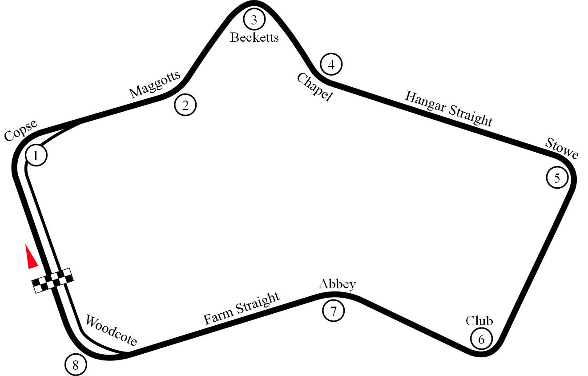

Il decimo campionato mondiale di Formula 1, compiuto di nuovo a Silverstone in Gran Bretagna, fu stato vinto da Jack Brabham, che correva su una
Cooper T53 .

Il Gran Premio di Gran Bretagna 1960 si è svolto domenica 16 luglio 1960 sul circuito di Silverstone. La gara è stata vinta da Jack
Brabham